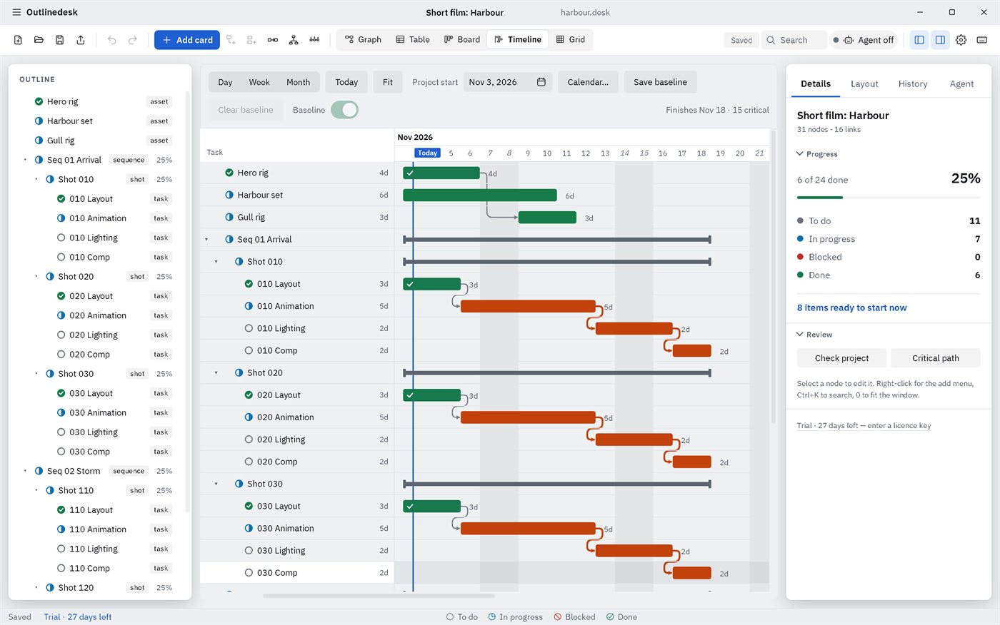
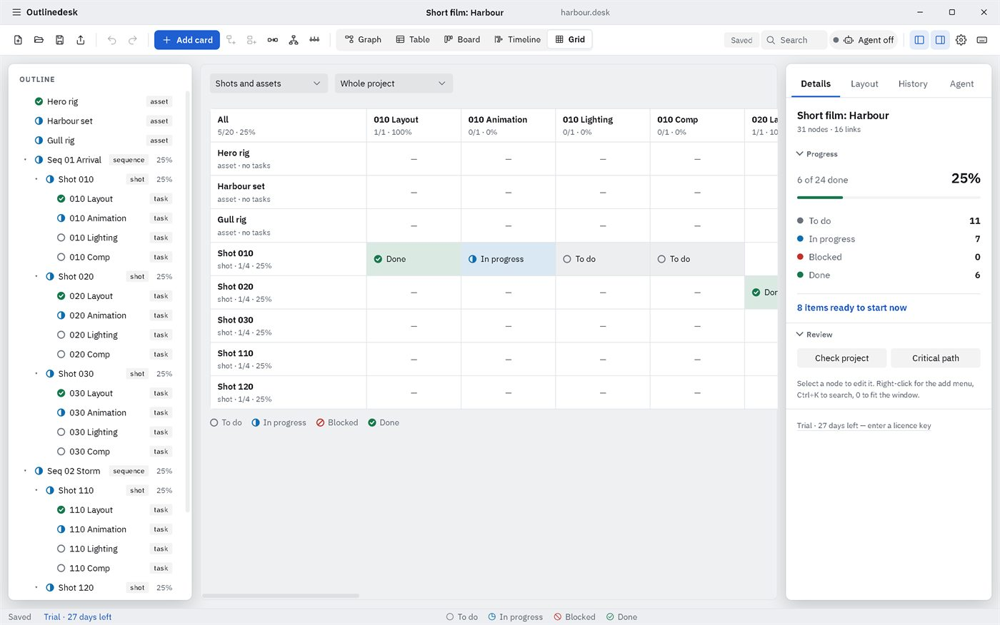
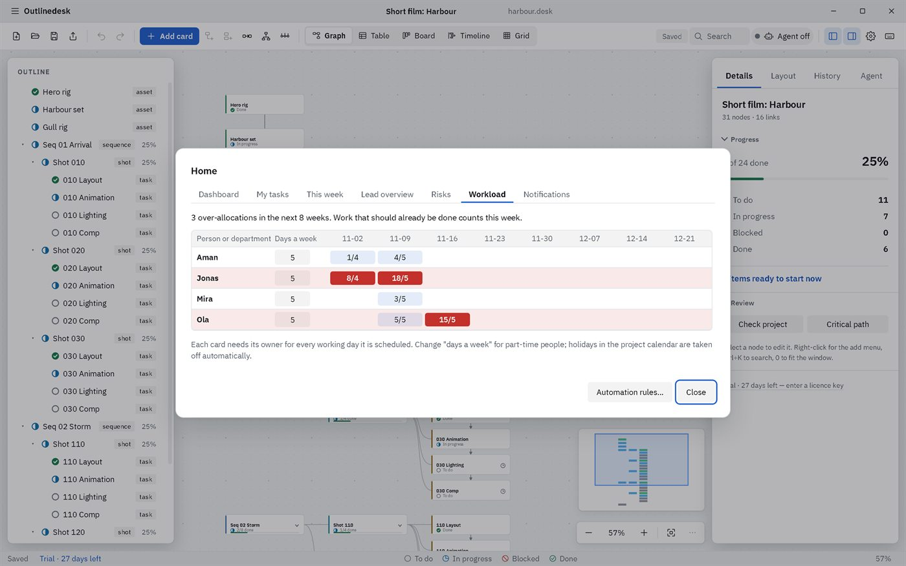
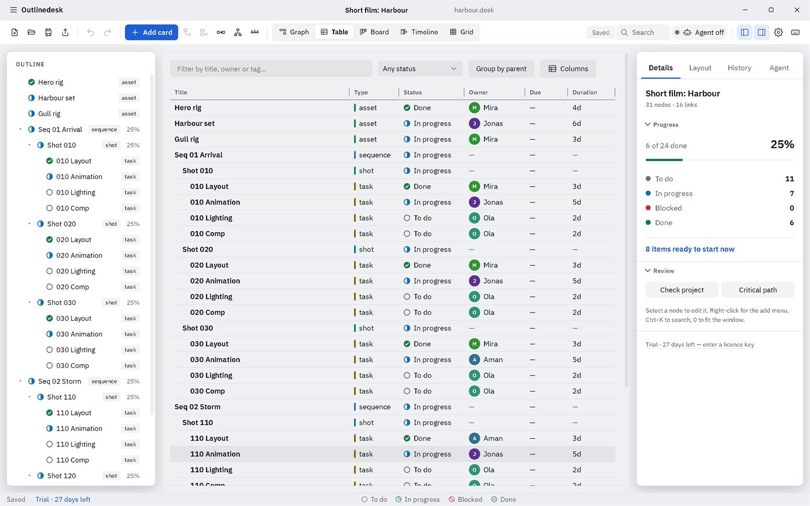
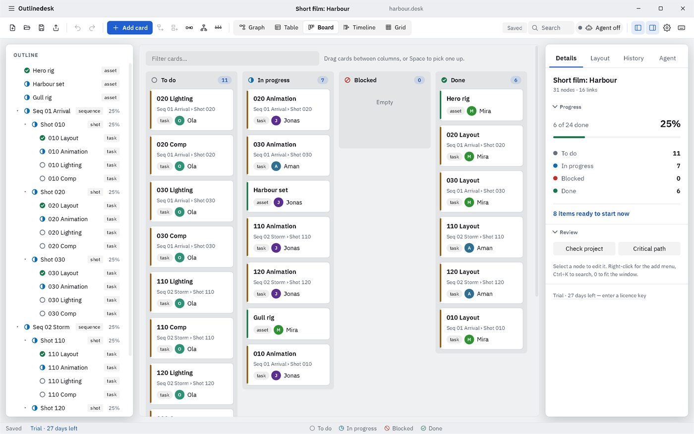
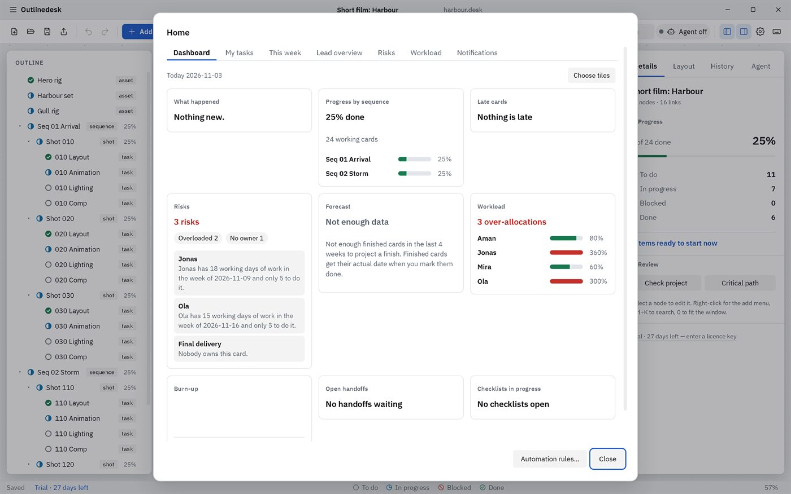
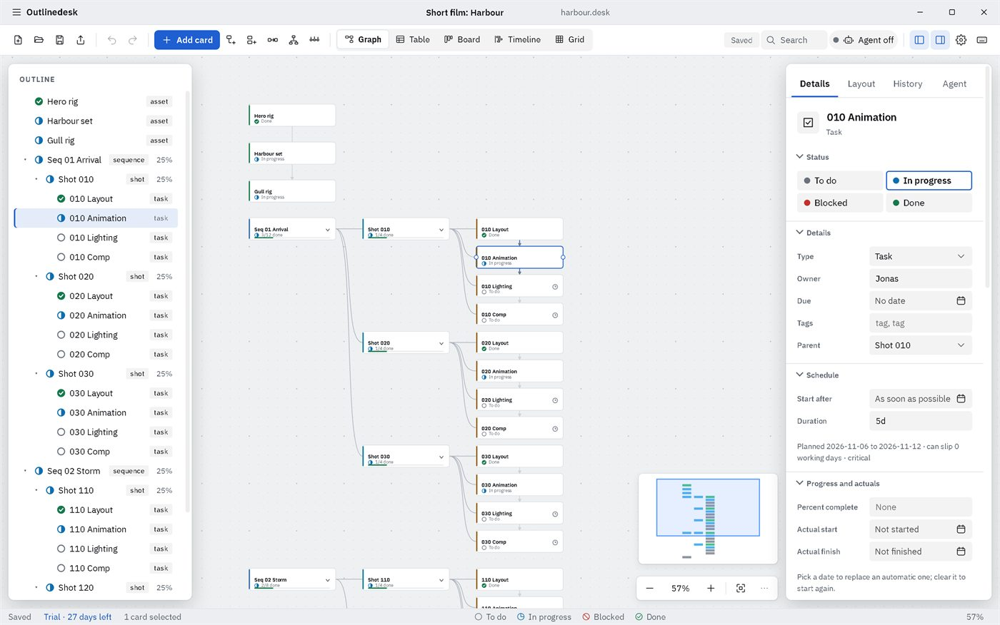

Solo
₹149 a month
One person. ₹1,599 a year.
Production planning for animation, VFX and game studios
Say what waits for what. Outlinedesk works out the dates, the critical path, progress and risks for you, offline, in your own files.
Free for 27 days, then ₹149 a month. No account, no upload.

Dates come from lengths, links and your working calendar. Change one number and every later date moves.
One project file on your own computer or shared drive. No account, no upload, no tracking.
Sequences, shots, departments, statuses and handoffs, not generic tasks.
Made for the way you work




What it does
Import an Excel or CSV file, paste ranges into the table, add columns of your own and formulas that roll up from the cards below. Export back to Excel any time.
It does not store your asset files. It links to them and notices when they change.
Progress by sequence, what is late, what is blocked, who has too much to do, and a forecast of the finish date from the work already completed.
The forecast says "not enough data" until there is finished work to project from.

Every card, every link, and the chain that decides your delivery date. Select a card to see its status, schedule and progress.
Team changes arrive when files sync, not live like a shared document.

Next to a spreadsheet
| Excel or Sheets | Outlinedesk | |
|---|---|---|
| Dates | Typed by hand, wrong after the first slip | Calculated from lengths, links and your working calendar |
| What blocks what | Kept in someone's head | Drawn as links, with blocked work flagged |
| Progress | Formulas you maintain | Rolls up from shots to sequences to the project |
| Two people editing | One overwrites the other | Changes merge, and clashes are listed |
| History | None, unless you copy the file | Undo, versions and a recovery area |
| Where it lives | Your files, or a cloud account | Your own files, offline, no account |
How it works
Pricing
₹149 a month
One person. ₹1,599 a year.
₹1,999 a month
Up to 8 seats. ₹21,999 a year.
₹299 a year
One verified student, launch price.
Questions
No. It works fully offline. The only network use is the optional update check, which you can turn off.
Yes. Import an Excel or CSV file, or paste rows copied from a sheet, then map the columns.
Yes, through a shared folder. Each person writes their own log and Outlinedesk merges them. Changes arrive when the files sync, not live.
Outlinedesk becomes read-only. Every project still opens and exports, and a new key unlocks editing again.
Windows 10 and 11, and Linux. There is no Mac version yet.
The first 27 days are free and include everything. Import the sheet you use today and see your real dates.